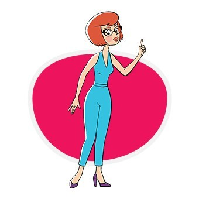

Дядя Фёдор — самостоятельный мальчик. У него рыжие волосы, желтая футболка без рукавов с зелёным воротником, и он носит джинсы. Очень любит животных.
Матроскин — полосатый говорящий кот. Склонен к рациональному мышлению — предпочитает из всего извлекать материальную пользу.
Шарик — бездомный добродушный деревенский пёс. Имеет чувство юмора.
Игорь Иванович Печкин — деревенский почтальон предпенсионного возраста, одиночка. Немного неухоженный, занудный, трусливый. Считает, что всё должно быть по правилам, никому исключений не делает.
Галчонок - без возраста. Украшение, душа дома в Простоквашино. Иногда произносит редкие фразы, повторяя их за персонажами. Любит сладости.
Папа Дяди Фёдора - около 45 лет. Отец двоих детей. Классический интеллигент, философ. Спокойный и надёжный. Всегда ухожен, выглядит современно.
Мама Дяди Фёдора - около 40 лет. Мать двоих детей. Эстрадная певица. Самодостаточная, городская, женственная, ухоженная, модная. Бывает холодна и раздражительна, но в то же время это очень ранимый, мягкий, чувствительный человек. 
Вера Павловна - младшая сестра Дяди Фёдора, около 1 года. Непоседливая, бесстрашная, любопытная, деловая, смешливая. Кажется самостоятельной, но пока беспомощна. Ходит неуверенно, общается при помощи звуков. Почти везде она вместе с Тамой-Тамой.
Тама-Тама - зверек, похожий на грызуна. Неизвестный гибрид сумчатой белки. Возраст неизвестен. Мудрая, обладает инженерными способностями — Леонардо да Винчи животного мира. Спокойная, уравновешенная. Она всегда неподалёку от Веры Павловны, ведет себя как няня.